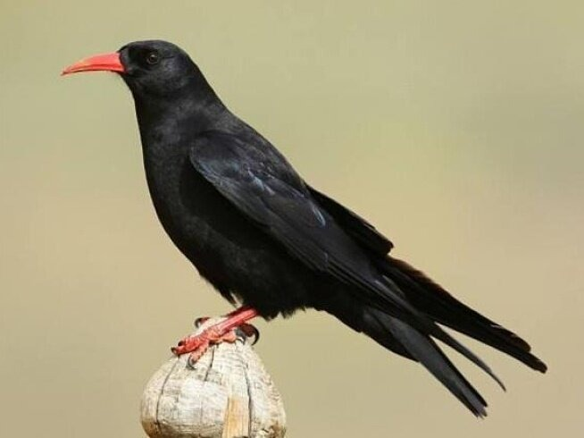
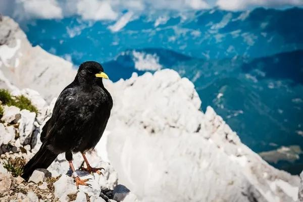
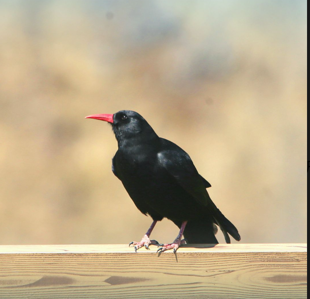

羽翼守望者

红嘴山鸦属（Pyrrhocorax）隶属于鸦科，全球仅2种：红嘴山鸦和黄嘴山鸦。体型约35-40cm，全身黑色，具金属光泽，喙和脚呈红色或黄色。栖息于高海拔山地、悬崖峭壁，也出现在寺庙和古堡附近。杂食性，以昆虫、谷物、浆果为食，也食腐肉。
繁殖期营巢于岩缝或建筑洞穴中，每窝产3-5枚卵。飞行技巧高超，善于利用上升气流盘旋。因其与人类古建筑关系密切，部分地区数量受人为影响。
📖 参考：点此处 查看国际鸟盟资料。

红嘴山鸦体长约38-40cm，通体黑色，喙和脚红色，翼具金属蓝绿色光泽。分布于欧亚大陆的山地、海岸悬崖及人类建筑。
杂食性，以昆虫、谷物、腐肉为食。繁殖期4-6月，营巢于岩缝，每窝产3-5枚卵。因适应人类环境，部分地区种群稳定。

黄嘴山鸦与红嘴山鸦相似，但喙为黄色，体型略小（35-38cm）。分布于欧亚大陆更高海拔的山地（3000-5000m）。
喜群栖，飞行时发出响亮哨声。以昆虫和植物种子为食。繁殖期5-7月，每窝产3-4枚卵。在中国西部高山常见。
📖 参考：点此处 查看 IUCN 评估。

红嘴山鸦属对生态环境适应性强，但依赖天然峭壁和古建筑，保护历史遗迹和维持自然岩壁对它们十分重要。公众可通过支持古建保护、减少农药使用来帮助它们。
📖 了解更多：点此处 查看中国林草局。